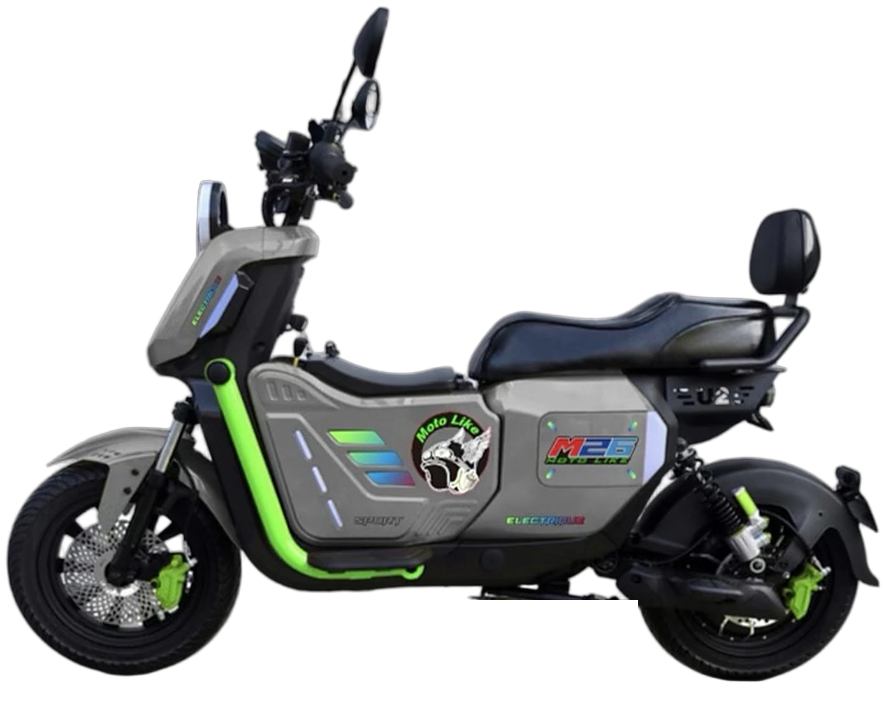
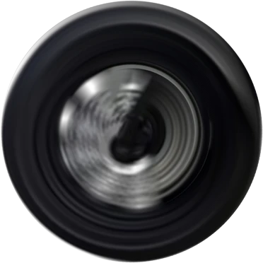
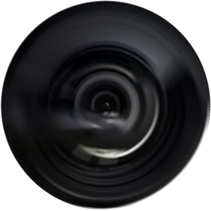

محرك مدمج في العجلة الخلفية · HUB
0واط
من 50 إلى 70 كم/س*
أوتوماتيكي · بدون لامبرياج
*السرعة القصوى المعلنة، تختلف حسب الإعدادات وظروف الاستعمال.





محرك 2000 واط
بدون لامبرياج. أدِر المقبض… وانطلق.
أدِر وانطلق